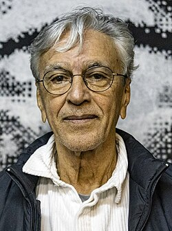
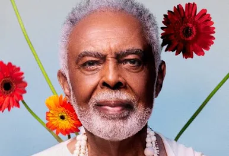
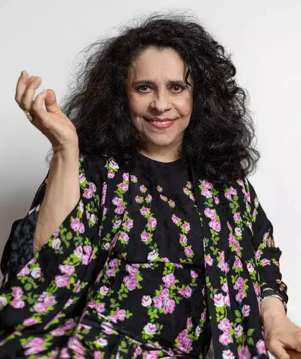
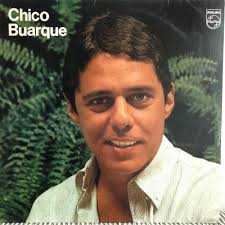
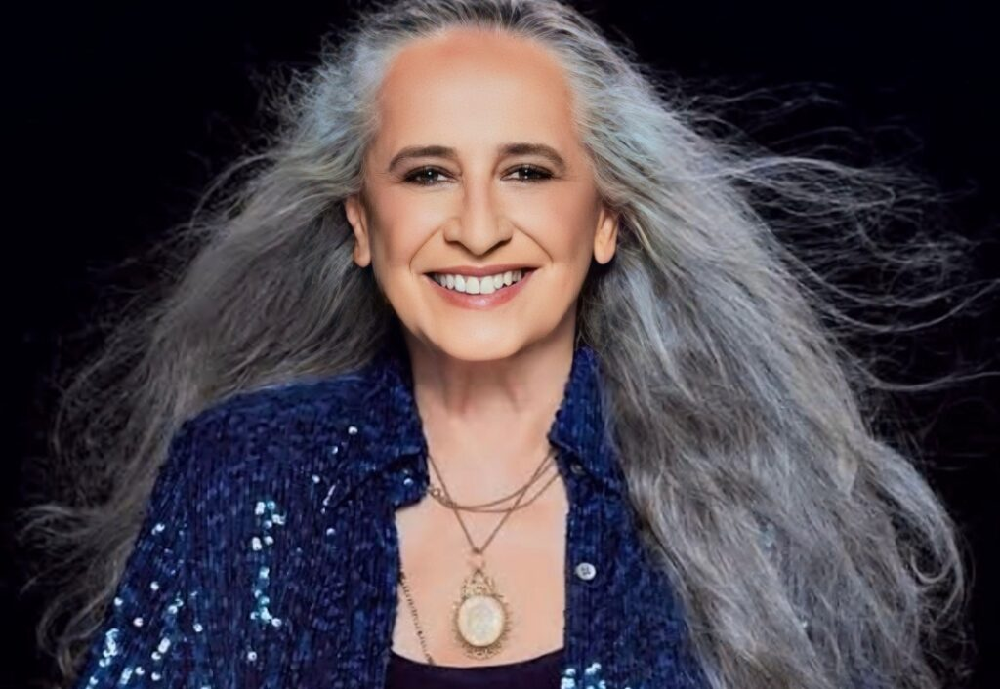
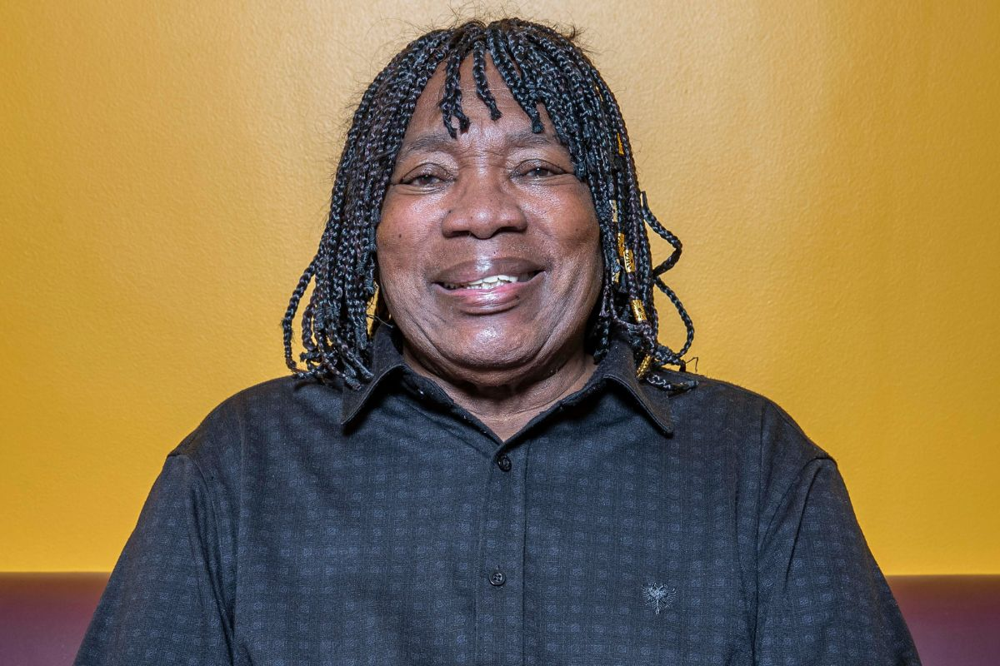
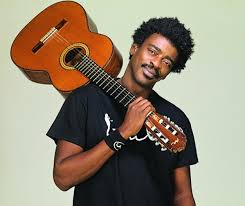

Caetano Emanuel Viana Teles Veloso OMC (Santo Amaro, 7 de agosto de 1942) é um cantor, músico, compositor e produtor. Com uma carreira que ultrapassa seis décadas, Caetano construiu uma obra musical marcada pela releitura e renovação e considerada amplamente como possuidora de grande valor intelectual e poético. Embora desde cedo tivesse aprendido a tocar violão em Salvador, escrito entre os anos de 1960 e 1962 críticas de cinema para o Diário de Notícias e conhecido o trabalho dos cantores de rádios e dos músicos de bossa nova (notavelmente João Gilberto, seu "mestre supremo" e com quem dividiria o palco anos mais tarde), Caetano iniciou seu trabalho profissionalmente apenas em 1965, com o compacto "Cavaleiro/Samba em Paz", enquanto acompanhava a irmã mais nova Maria Bethânia por suas apresentações nacionais do espetáculo Opinião, no Rio de Janeiro.

Gilberto Passos Gil Moreira (Salvador, 26 de junho de 1942) é um cantor, compositor, multi-instrumentista e político brasileiro. Ele é um dos artistas mais influentes da música popular brasileira (MPB) e é conhecido por sua mistura de estilos musicais, incluindo samba, reggae, rock e música africana. Gil começou sua carreira musical na década de 1960 e rapidamente se tornou uma figura importante no cenário musical brasileiro. Ele é conhecido por suas letras poéticas e engajadas, que abordam temas sociais e políticos. Além de sua carreira musical, Gil também teve uma carreira política significativa, servindo como Ministro da Cultura do Brasil de 2003 a 2008.

Maria da Graça Costa Penna Burgos (Salvador, 26 de setembro de 1945) é uma cantora brasileira. Ela é conhecida por sua voz poderosa e versatilidade musical, que abrange uma ampla gama de estilos, incluindo MPB, samba, rock e música eletrônica. Gal Costa começou sua carreira musical na década de 1960 e rapidamente se tornou uma figura importante no cenário musical brasileiro. Ela é conhecida por suas interpretações emocionantes e por sua habilidade em transmitir sentimentos profundos através de sua música. Ao longo de sua carreira, Gal Costa lançou inúmeros álbuns e se tornou uma das cantoras mais respeitadas e influentes do Brasil.

Francisco Buarque de Hollanda, conhecido como Chico Buarque (Rio de Janeiro, 19 de junho de 1944), é um cantor, compositor, dramaturgo e escritor brasileiro. Ele é um dos artistas mais importantes da música popular brasileira (MPB) e é conhecido por suas letras poéticas e engajadas, que abordam temas sociais e políticos. Chico Buarque começou sua carreira musical na década de 1960 e rapidamente se tornou uma figura importante no cenário musical brasileiro. Ele é conhecido por suas interpretações emocionantes e por sua habilidade em transmitir sentimentos profundos através de sua música. Além de sua carreira musical, Chico também é um renomado escritor, tendo publicado vários romances e peças teatrais ao longo de sua carreira.

Maria Bethânia Viana Teles Veloso (Santo Amaro, 18 de junho de 1946) é uma cantora brasileira. Ela é conhecida por sua voz poderosa e versatilidade musical, que abrange uma ampla gama de estilos, incluindo MPB, samba, rock e música eletrônica. Maria Bethânia começou sua carreira musical na década de 1960 e rapidamente se tornou uma figura importante no cenário musical brasileiro. Ela é conhecida por suas interpretações emocionantes e por sua habilidade em transmitir sentimentos profundos através de sua música. Ao longo de sua carreira, Maria Bethânia lançou inúmeros álbuns e se tornou uma das cantoras mais respeitadas e influentes do Brasil.

Milton Nascimento (Rio de Janeiro, 26 de outubro de 1942) é um cantor, compositor e músico brasileiro. Ele é conhecido por sua voz única e por sua habilidade em combinar diferentes estilos musicais, incluindo MPB, samba, jazz e música africana. Milton Nascimento começou sua carreira musical na década de 1960 e rapidamente se tornou uma figura importante no cenário musical brasileiro. Ele é conhecido por suas interpretações emocionantes e por sua habilidade em transmitir sentimentos profundos através de sua música. Ao longo de sua carreira, Milton Nascimento lançou inúmeros álbuns e se tornou um dos artistas mais respeitados e influentes do Brasil.

Seu Jorge (São Paulo, 19 de março de 1964) é um cantor, compositor e músico brasileiro. Ele é conhecido por sua voz distintiva e por sua habilidade em interpretar canções com um estilo único que combina elementos da música popular brasileira (MPB) com influências do jazz e do rock. Seu Jorge começou sua carreira musical na década de 1980 e rapidamente se tornou uma figura importante no cenário musical brasileiro. Ele é conhecido por suas interpretações emocionantes e por sua habilidade em transmitir sentimentos profundos através de sua música. Ao longo de sua carreira, Seu Jorge lançou inúmeros álbuns e se tornou um dos artistas mais respeitados e influentes do Brasil.
